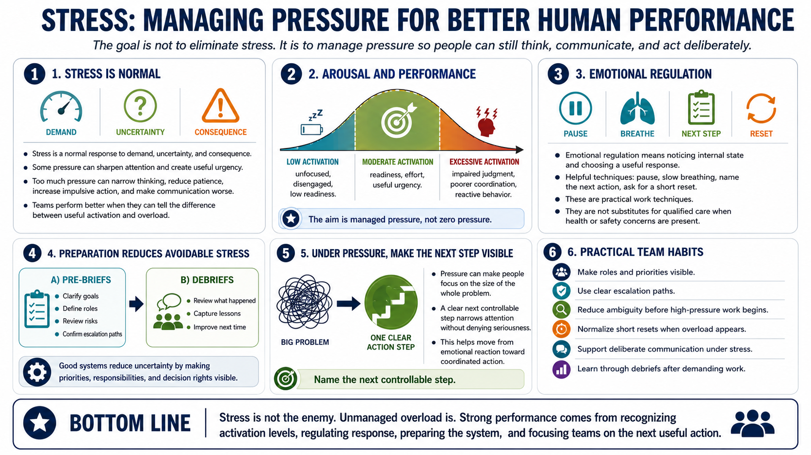

Stress, Pressure, and Emotional Regulation
Connecting to LMS... Progress: in progress

Narration
Stress is a normal response to demand, uncertainty, and consequence. Some pressure can sharpen attention and create useful urgency. Too much pressure can narrow thinking, reduce patience, increase impulsive action, and make communication worse. Human performance improves when teams can tell the difference between useful activation and overload.
Arousal and performance have a practical relationship. Very low activation can feel unfocused or disengaged. Moderate activation can support readiness and effort. Excessive activation can interfere with judgment and coordination. The point is not to eliminate stress. The point is to manage pressure so people can still think, communicate, and act deliberately.
Emotional regulation is the ability to notice internal state and choose a useful response. Simple pause techniques, slow breathing, naming the next action, and asking for a short reset can help create space between stimulus and action. These are practical work techniques, not substitutes for qualified care when health or safety concerns are present.
Preparation reduces avoidable stress. Pre-briefs clarify goals, roles, risks, and escalation paths before work begins. Debriefs help teams learn after the event. Good systems reduce uncertainty by making priorities, responsibilities, and decision rights visible. Under pressure, people should not have to invent the process from scratch.
A practical habit is to name the next controllable step. Under pressure, people can become trapped in the size of the whole problem. A clear next action narrows attention without denying the seriousness of the situation. This helps individuals and teams move from emotional reaction toward coordinated action.